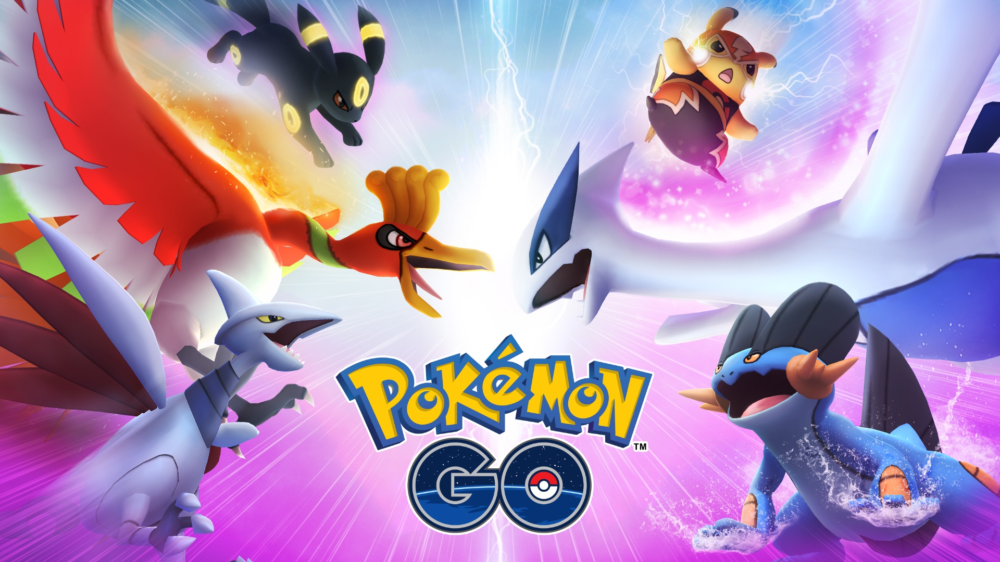

Evolução dos Jogos Mobile |
Home | Contate-nos por aqui | Sobre nós | |
|---|---|---|---|---|
|
|
Os jogos mobile transformaram nossos dispositivos em portais de entretenimento. De quebra-cabeças envolventes a desafios emocionantes, a evolução dos jogos mobile trouxe uma nova era de diversão instantânea e acessível. Descubra como esses jogos inovadores moldaram a forma como interagimos com a tecnologia e nos proporcionaram uma nova forma de diversão em qualquer lugar e a qualquer momento. |
|||
Call of Duty Mobile |
Diablo Immortal |
Genshin Impact |
PUBG Mobile |
|
A evolução dos jogos mobile é uma história de inovação e adaptação. Desde os primeiros jogos simples até os títulos complexos e visualmente impressionantes de hoje, os jogos mobile têm avançado significativamente. Explore como esses jogos ajudaram a popularizar novas mecânicas e a criar uma experiência de jogo que é acessível e envolvente. |
|
|||
Jogos Mobile: A Nova Era de Entretenimento Acessível Os jogos mobile evoluíram para se tornarem uma parte crucial da indústria de videogames, oferecendo diversão e inovação ao alcance das nossas mãos. Desde os primeiros lançamentos até os avanços modernos, esses jogos têm sido uma força impulsionadora para a evolução tecnológica e o crescimento da cultura gamer. |
Leia mais aquiA ascensão dos jogos mobile a partir dos anos 2000 marcou uma nova era na indústria dos videogames. Títulos como "Angry Birds", "Clash of Clans" e "Pokémon GO" não apenas definiram a jogabilidade móvel moderna, mas também introduziram novas formas de monetização e design de interface. Esses jogos ajudaram a criar uma base sólida para o crescimento contínuo do mercado mobile e a inovação tecnológica. Além disso, os jogos mobile têm desempenhado um papel importante na popularização dos e-sports e na criação de uma cultura gamer global, que continua a se expandir e evoluir. |
|||
|
 | |||
|
|
||||
| rodapé | Home | Contate-nos por aqui | Sobre nós | |